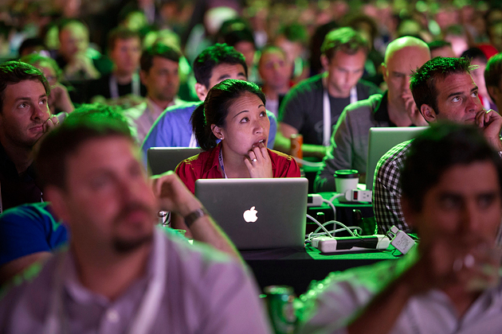

Week 4 Cultural Blog - Women in tech

The topic I've chosen for this weeks cultural blog scares me. It's a topic I've seen in news in varying degrees over the past several years. It usually goes something like this. "Ms. Female programmer quit her job at x tech company today citing harassment, bullying, and general hate as her reason for leaving. CEO of x tech company had little to say on the matter other than the employees at fault were told to be better but all is well because crazy Ms. Female programmer finally left the company like they wanted in the first place."
The astounding number of news articles and blog posts that all follow this pattern is staggering. I can't even begin to fathom a culture that could get this bad. Is there no repercussions for treating a person like the tech world seems to do to women on a daily basis? How can this type of thing continue to be common place?
As I read article after article and blog post after blog post I've come to some startling insights that shouldn't have surprised me and I would like to share them here in hopes that in some way we can all be better about the way treat each other.
The Internet Effect
There is this crazy thing that I like to call the Internet effect. It's a crazy thing that has now impacted an entire generation. It's the ability of a person to do despicable, careless, hateful things to another person via the Internet because of the disconnect and anonymity that the Internet provides.
News articles on top news websites have people skipping the article to get to the comments just to threaten, intimidate, and curse at other people. Have you heard of tl dr? To long didn't read is what it stands for and it's common place as people jump straight to calling each other names and flinging hurt full obscenities at each other.
There are even stories of users having their personal information hunted down and then used to harass them outside the Internet in the real world. Social Security numbers posted, employers called, threatening phone calls made to family. The scenarios are scary and they happen all to often.
We now live in a culture where it's the norm to talk and joke about porn, rape, and killing as a means to let someone know that you disagree with them.
The Bro Culture
The tech world is unique for many reasons but it has one that really sticks out as a cause for the problem at hand. That is "The Bro Culture". Most tech companies start out as a small group of friends. People that new each other from hackathons, previous jobs, or even college. These tight nit(usually all male) start up companies almost always have NO HR department and they almost always revolve around friends working late hours to build something.
In this type of setting, crass language, joking, and bad mouthing can be common place. This type of "Anything goes" culture always has repercussions when you throw in people that do not fit the mold of "The Bro Culture".
When problems do arise, and they always do, the group of all male founding friends usually always side with each other and refuse to see the harm being done. The lack of policy and no HR department only further removes the mistreated party from any course of action other than quiting or being vocal to the point of being fired.
Many women interviewed from the tech world state that they just keep their heads down and don't rock the boat and try to fit into the culture rather than change it. They also stated that their input, skills, and code where almost always over looked or worse removed from code bases during code reviews where male counter parts judged them harshly.
A world driven by youth
Many of the engineers in todays tech world fit the following mold. White, between 20 and 30, and single. It is a demographic that screams competitive, crass and lewd. To this group, women almost always are viewed as sexual objects and/or as lesser beings. While this is not 100% true for all engineers, it has become widely apparent that it is for a good chunk.
In this type of environment, the contributions of women engineers often go overlooked and/or harshly treated. It's almost as if male engineers are trying to prove that women can't code.
Where are all the women?
This probably goes with out saying but, throw a bunch of men in a room and eventually the conversation will turn to something that would offend at least some ethnic group or women. It is not an excuse but a point. The number of women in the industry is very low.
This lack of women developers has created a testosterone driven work environment. When the norm changes, people tend to fear or hate that which is causing the change. Most times people can't adapt quick enough so they lash out. Others hate and see women as an intrusion to their all male work environment where things had no structure but everyone was happy.
Many male developers also fear being shown up. Studies have shown that much like the husband in a marriage fears being out earned in a marriage, male developers fear being shown up by their female counter parts.
What can we do to fix it?
The million dollar quest right? I think the better question is why is there not more women interested in the computer sciences and technology as a whole? Is it the current male face of tech? Is it a lack of strong female role models in the industry? There are so many questions and I'm sure that there is no one answer to solve the deep problems that are in the industry.
I believe that there are several things that we can do now though that can have solid profound impact of women wanting to be a part of the tech world
The first is to increase awareness. The more we put this in the light the more it will change for the good. It can't just be an occasional news story anymore. It has to be companies coming together and acknowledging the problem.
There must be policy. There must be training provided to employees, there must be HR at tech companies, there must be a commitment to over coming the problem.
Second, we must stop segregating. I'm all for "all women" coding schools and "all women" hackathons but at some point that only serves to enforce the male ego when it says women are NOT strong enough to be in this industry. We have to work side by side. The new norm has to be a diverse employee base. It can't be tech company 1 is all male and tech company 2 is all female. We have to work together on this, even if it's hard.
Thirdly, we need to promote and inspire women to want to be in this industry. There are just as many positive stories as there are bad ones. We just need to stop focusing on the negative so much and start showing the positive impact that women are having on the industry. Show women that they can change the world through software.
Lastly, and most importantly, we need to remember that though we may all have different beliefs, backgrounds, and desires, we are all still human beings. We all deserve to be treated with kindness and respect. We all deserve a shot at a meaningful career where we can have a positive impact and support ourselves and our families.